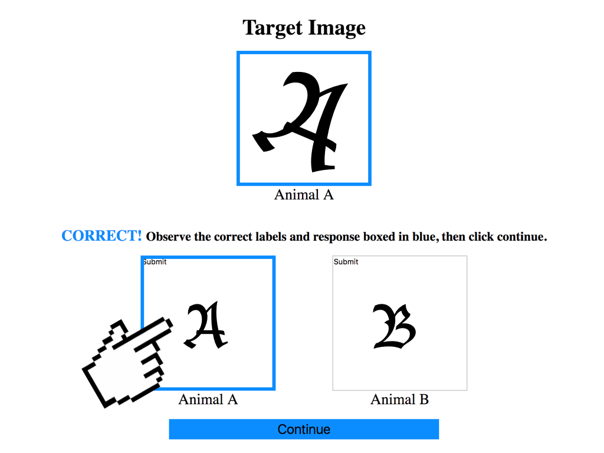
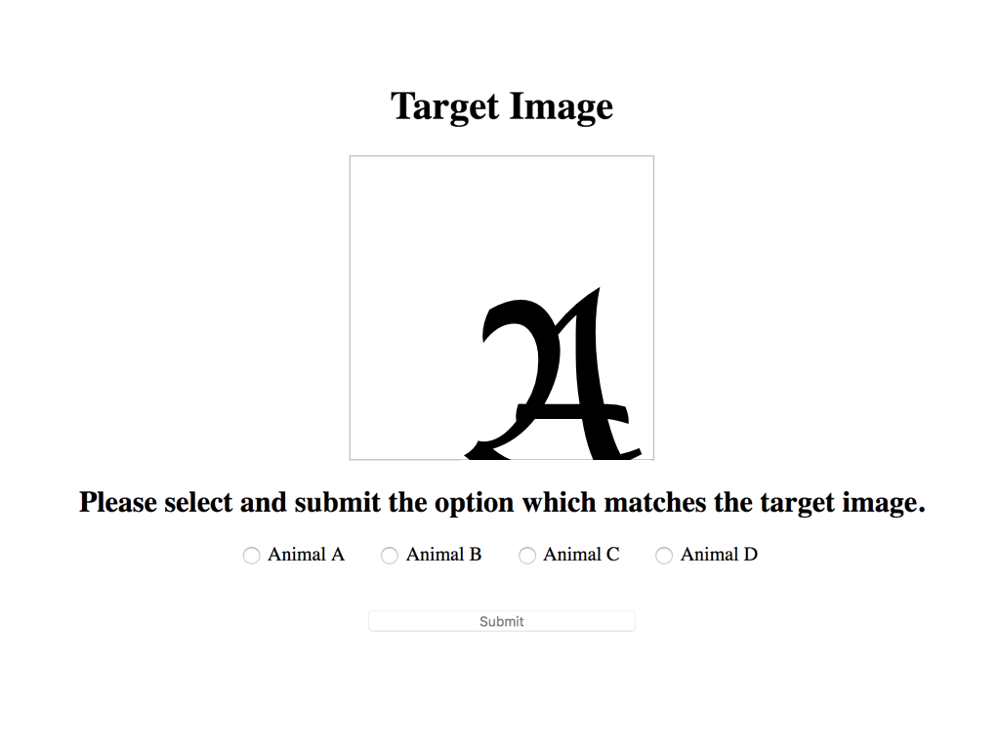

The first 9 questions compose the learning phase. The user will be asked to select which of two images is most similar to a third. Then the user will be given the correct answer, and be asked to learn from the example.
A simple example question is shown below. The target image is "A", and is labeled that it is "Animal A". The user will then click on either of the two images--"A" or "B"--in the second row which he/she believes is most similar to the target image.
The user will then be told whether his/her answer is correct or incorrect, and shown the correct answer.
In our example, if the user clicked image "A" on the bottom, the below correct window is shown. The correct answer is boxed in blue and all labels are shown. Please memorize these labels as you will be assessed on your knowledge in the second half. Then click continue.
If the user clicked image "B" on the bottom, the incorrect window is shown. The correct answer is again boxed in blue and all labels are shown. Please memorize these labels as you will be assessed on your knowledge in the second half. Then click continue.
The next 30 testing questions are multiple choice, and will assess your knowledge. You will be shown a picture, and be asked to select its identity from one of the 4 choices above. An example for "Animal A" is shown below.
Bonuses are granted for the top 10% of scores. Thank you for your time!